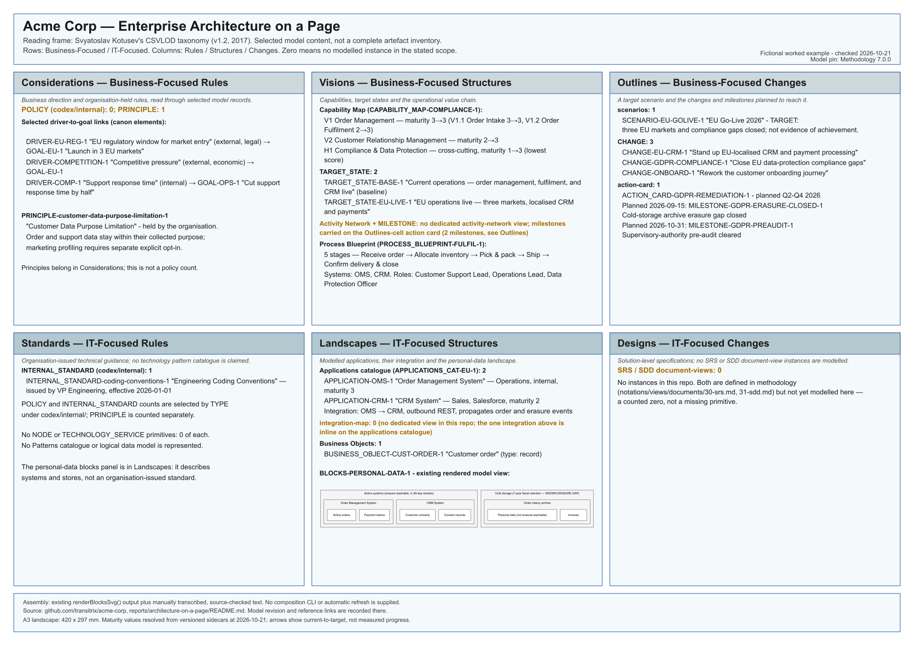

Acme architecture on a page
A fictional organisation, read across six connected perspectives: business direction, capabilities, planned changes, technical guidance, systems and solution designs.
This is a worked example of reading a Transitrix repository through Svyatoslav Kotusev's CSVLOD taxonomy. It shows selected model content and explicit gaps; it is not a reference sheet of the taxonomy itself.
One landscape page, 420 × 297 mm. Free to read and download, with no sign-up.
The architecture snapshot on one surface

Read the six cells
The rows separate business-focused and IT-focused material. The columns separate rules, structures and changes. These are reading perspectives, not a claim that every selected record is a complete CSVLOD artefact.
Considerations — business rules
EU market-entry pressure and competition connect to the goal of launching in three EU markets. Support response time connects to the goal of halving response time.
The model holds one principle, Customer Data Purpose Limitation: order and support data stay within their collected purpose; marketing profiling requires separate explicit opt-in. Principles belong in Considerations. The separate count of admitted policies is zero.
Visions — business structures
The capability map covers Order Management, Customer Relationship Management and the supporting Compliance & Data Protection capability. Current-to-target maturity is 3→3 for Order Management, 2→3 for CRM and 1→3 for Compliance. Order Intake is 3→3; Order Fulfilment is 2→3.
Two state records describe the baseline and EU target. The five-stage order flow is receive order → allocate inventory → pick and pack → ship → confirm delivery and close. It involves OMS, CRM, Customer Support Lead, Operations Lead and Data Protection Officer.
Outlines — business changes
One target scenario describes EU go-live. Three changes cover EU-localised CRM and payments, data-protection gaps and customer onboarding.
One GDPR remediation action card contains two planned milestones: the archive-erasure gap closed on 15 September 2026 and the pre-audit cleared on 31 October 2026. These dates are the model's plan, not verified completion. There is no dedicated activity-network view.
Standards — IT rules
One internal standard, Engineering Coding Conventions, is issued by VP Engineering with an effective date of 1 January 2026. This is organisation-issued guidance, not an external technical standard or a patterns catalogue.
Policy, principle and internal-standard counts use distinct record types; one count does not silently include the others.
Landscapes — IT structures
The selected portfolio contains two applications: the internally supplied Order Management System (maturity 3) and Salesforce CRM (maturity 2). One outbound REST integration carries order and erasure events from OMS to CRM.
The blocks panel groups active order, payment, contact and consent data separately from cold storage. The archive is explicitly modelled as an erasure gap. One business-object primitive represents a customer order; this is not a complete logical data model. There is no dedicated integration-map view, and no NODE or TECHNOLOGY_SERVICE primitives are modelled.
Designs — IT changes
Zero SRS or SDD document-view instances are modelled in this repository snapshot. This does not mean that the specifications do not exist or that the fictional organisation has no designs.
How this example was assembled
The page is manually assembled. The systems-and-stores panel retains an existing renderBlocksSvg() rendering of the personal-data view; the remaining cells contain manually transcribed, source-checked text. There is no composition command or automatic refresh supplied with this example.
Counts refer to selected populations in the pinned fictional model. Maturity is resolved from versioned attribute histories at 21 October 2026; arrows show current and target values, not measured progress. Targets, scenario statements and milestone labels are not proof of achieved outcomes or legal compliance. A zero means no instance in the named model population, not that the real-world thing cannot exist.
Sources and provenance
The rendered source and cell-to-source mapping identify the exact report revision. Its model baseline is Acme Corp revision 0530089, pinned to Methodology 7.0.0 and checked on 21 October 2026. Downloaded copies do not update when the repository changes.
The reading frame is Svyatoslav Kotusev's Enterprise Architecture on a Page, v1.2, explained in his 2017 article. This Acme example is a Transitrix interpretation, not a reproduction of his poster or an endorsement.
For the underlying approach, see enterprise architecture as text and the Methodology.